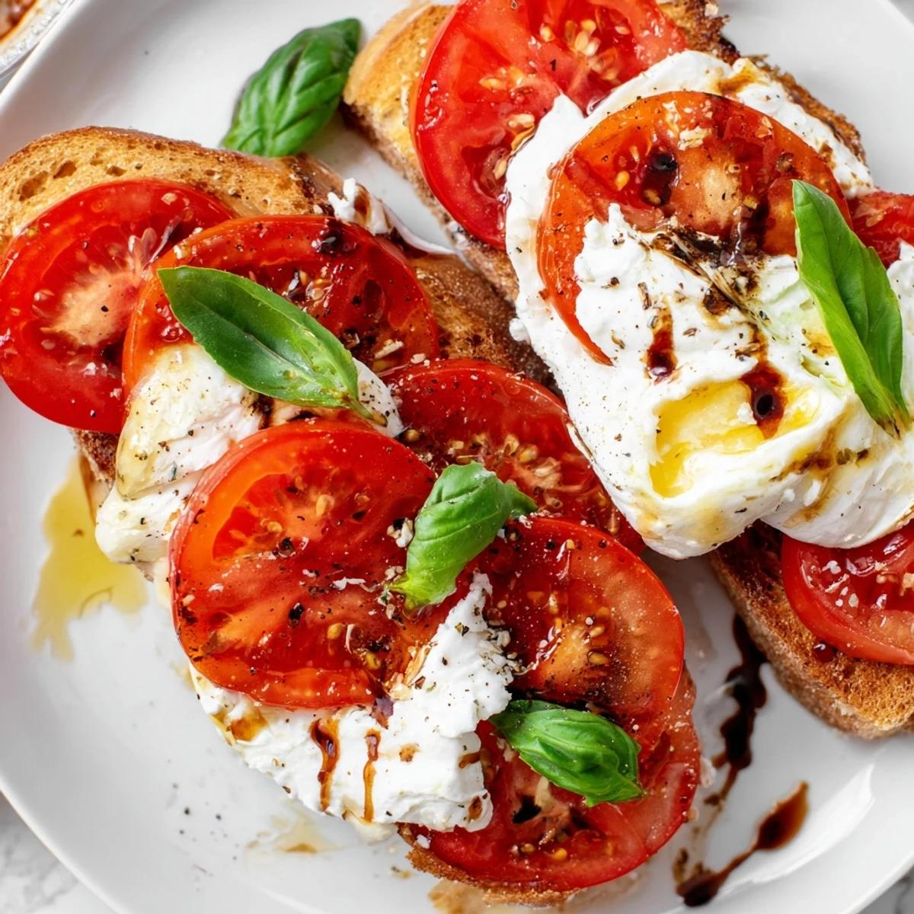
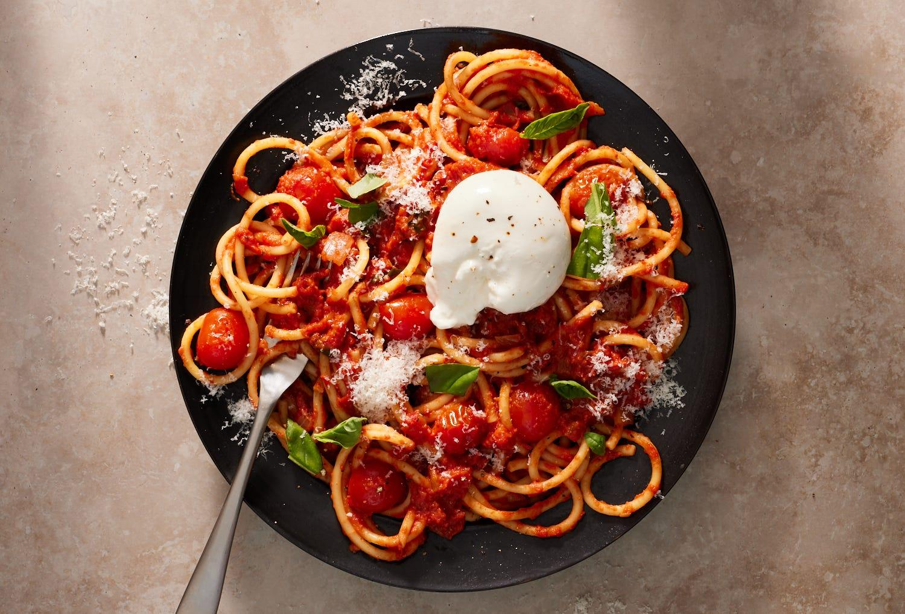

Miso Tomato Burrata Pasta
30 min
1 serving
Contains dairy
A rich and savory tomato pasta made with cherry tomatoes, garlic, shallot, miso, and creamy burrata.
Ingredients
- 1 shallot
- 3 cloves garlic
- 1 box cherry tomatoes
- 1 ball burrata
- Spaghettini or pasta of choice
- Miso paste
- Salt
- Black pepper
- Garlic powder
- Chili flakes
- Rosemary
Instructions
- Bring a pot of salted water to a boil and cook the pasta according to the package instructions.
- Finely chop the shallot and garlic and cut the cherry tomatoes in half.
- Cook the shallot and garlic until softened and fragrant.
- Add the tomatoes and cook until they soften and begin to form a sauce.
- Stir in the miso paste with a small amount of pasta water.
- Add the cooked pasta and toss until completely coated in the sauce.
- Transfer to a bowl, add the burrata, and finish with pepper, chili flakes, or rosemary.
Equipment
- Large pot
- Frying pan or skillet
- Cutting board
- Knife
- Wooden spoon or spatula
- Colander
Serving + Storage
Serve immediately with the burrata on top. Finish with black pepper, chili flakes, or rosemary if desired.
Source
TikTok recipe by @j8c1yn